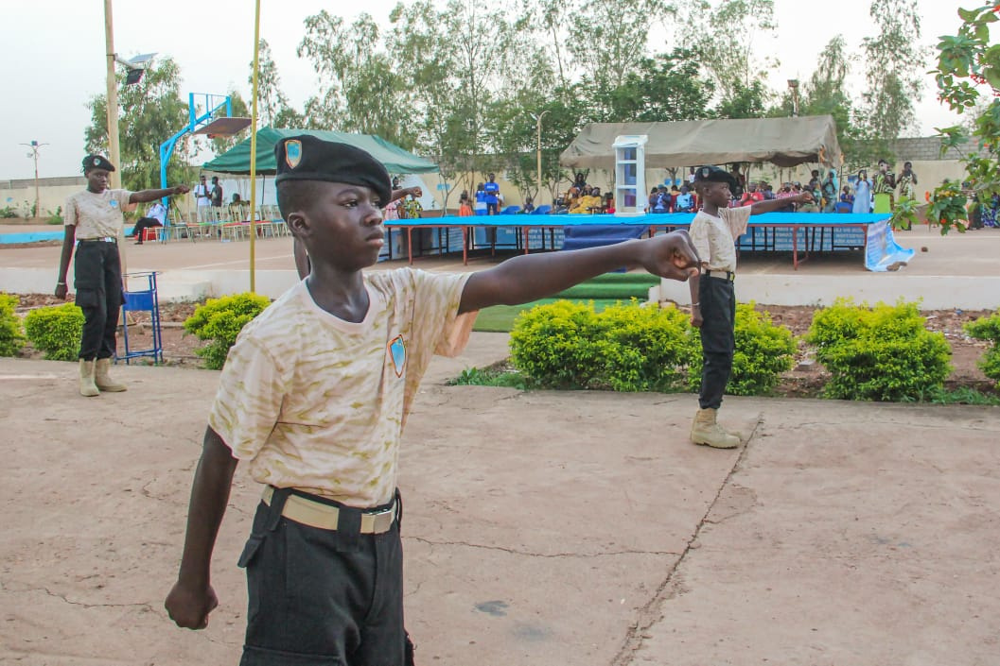

Un projet mûri avant d'être ouvert. Une école née d'une conviction.
Apidon Royal College, premier Prytanée civil d'Afrique, a été fondé en 2018 par le Dr Nacro Gambetta Aboubakar, après dix sept années de réflexion et de préparation.

Le projet Apidon Royal College est né d'une conviction forte. L'école ne doit pas seulement transmettre des connaissances. Elle doit aussi former des femmes et des hommes capables de contribuer positivement à la société.
Après dix sept années de réflexion, le projet devient une réalité en 2018. Dès son ouverture, l'établissement s'installe à l'entrée de Loumbila, vers le contournement de la SND. Il s'y trouve encore aujourd'hui.
Apidon Royal College ouvre ses portes avec deux élèves en classe de 6e. Ce choix illustre la philosophie de l'établissement. La priorité n'a jamais été la rentabilité immédiate. Elle a toujours été l'impact réel sur chaque élève confié.
Depuis, l'école développe progressivement son projet éducatif. Internat, ateliers techniques, semaines thématiques, parcours du combattant Jagama Kello, immersion annuelle au Ghana. Chaque initiative prolonge la même conviction de départ.
Vingt trois ans, en trois temps.
Faire le choix de s'investir dans l'éducation des jeunes est tout à la fois osé, exaltant et passionnant au regard des enjeux et de la responsabilité. Prendre l'option, au collège et au lycée, de ne point recruter que les meilleurs, est tout aussi risqué et ambitieux, quand l'on veut se positionner comme une école de référence.
Trois valeurs, vécues depuis l'origine.
Depuis la création de l'école, ces principes inspirent aussi bien les activités pédagogiques que la vie de l'établissement.
Discipline
Faire ce qui doit être fait, même lorsque cela demande des efforts. Respect des règles, ponctualité, sens des responsabilités.
Rigueur
Accomplir chaque tâche avec sérieux, précision et persévérance. Construire des habitudes solides.
Humilité
Reconnaître que l'on peut toujours apprendre. Respect des autres, écoute, progression sans arrogance.